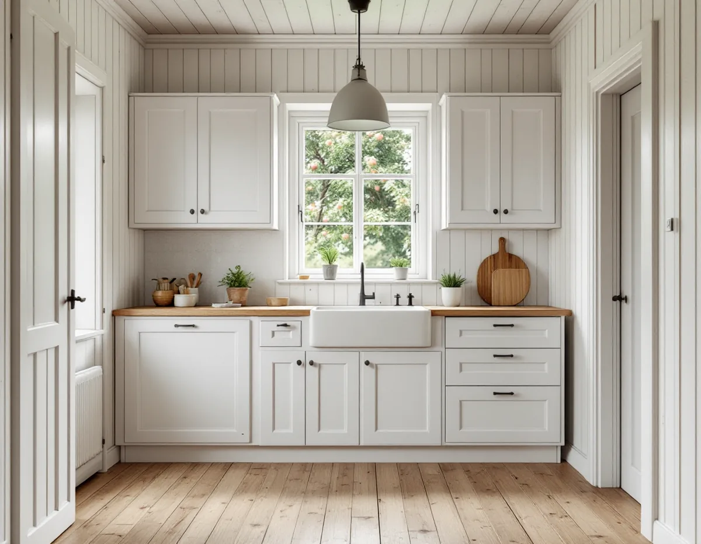
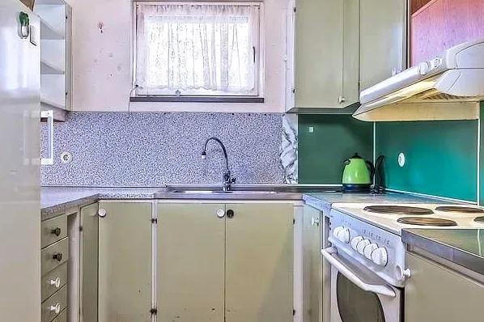

Platsbesök
Vi mäter köket, ser var stam, frånluft och el finns och går igenom vad som ska behållas.
När Gamla Enskede byggdes fick varje hus bara ha ett kök. Många av typhusen var på två eller tre rum och kök, och köket var därefter. I dag vill de flesta ha mer plats och ljus vid spisen, och ibland ett extra pentry i källaren. Geal Entreprenad AB gör om kök i Enskede med gratis platsbesök, skriftligt kostnadsförslag och ROT-avdraget direkt på fakturan.

Enligt Stadsmuseets byggnadsinventering av Gamla Enskede uppläts tomterna med tomträtt från den 1 januari 1908. Kontraktet gällde i 60 år och reglerade bebyggelsen: boningshuset fick ha högst två våningar utöver källare och vind och skulle bara innehålla ett kök. Regeln var till för att huset inte skulle bli bostad åt mer än en familj, och den hörde ihop med ett förbud mot inneboende.
Staden åtog sig i samma kontrakt att anlägga vägar och dra fram vatten, avlopp och gas. Inventeringen beskriver hur en jämförelse omkring 1910 visade att ett eget hem med två rum och kök, källare och trädgårdstäppa i Enskede kostade lika mycket per år som att hyra en lika stor lägenhet i innerstaden.
Typhusen i inventeringen spänner från två rum och kök till fem rum och kök, och bara några av planerna har eget bad. Vid platsbesöket börjar vi därför med att ta reda på vilken typ huset hör till och vad som har ändrats i köket sedan dess.

Ett pentry i källaren för gäster eller vuxna barn är en vanlig önskan. Blir utrymmet en egen bostad gäller reglerna för ny bostad i enbostadshus: staden skriver att den kan inredas utan bygglov under vissa förutsättningar, men att utökad lovplikt gäller i en särskilt kulturhistoriskt värdefull byggnad eller ett sådant område. Då krävs bygglov även för det som annars är lovfritt.
Gamla Enskede är ett av de fem småhusområden i Stockholm som enligt översiktsplanens redovisning är av riksintresse för kulturmiljövården. Om just ditt hus omfattas av utökad lovplikt ger Stadsmuseets klassificeringskarta en första indikation, och ibland behövs museets bedömning.
Oavsett lovfrågan ska en ytterligare bostad uppfylla dagens krav på bland annat tillgänglighet, brandsäkerhet och rumshöjd. Ändras brandskydd eller bärande konstruktion, eller installeras vatten och avlopp, behövs dessutom en anmälan och ett startbesked innan arbetet börjar. Vi reder ut vad som gäller innan källarköket ritas.
Inventeringen beskriver att friliggande hus ibland har långsidan med veranda mot gatan och ibland gaveln, oftast med en kökstrappa vänd mot gatan. Köket har alltså ofta legat vid gaveln med egen ingång. Vill man flytta det till trädgårdssidan eller öppna det mot vardagsrummet är det planlösningen inne i huset som ändras, och det kräver enligt Stockholms stad inget bygglov.
En anmälan och ett startbesked behövs däremot om flytten påverkar bärande konstruktion eller brandskydd, om ventilationen ändras väsentligt eller om en ny VA-stam dras i ett nytt schakt. Staden påminner om att ett kök behöver tillräcklig frånluft och ska uppfylla kraven för imkanal, och råder dig att tidigt fråga sotaren om förutsättningarna för en ny eller ändrad kanal.
Staden skriver också att hänsyn till byggnadens kulturhistoriska värden ska tas vid alla ändringar, även inomhus. Därför sparar vi gärna fasta snickerier som går att återanvända, till exempel dörrfoder och fönsterbänkar. Ska fasaden eller fönstren mot gatan ändras samtidigt, se fasadrenovering i Enskede.
Enligt Stockholms spår om Sockenplan fortsatte utbyggnaden efter trädgårdsstadens kärna ända fram till 1945. Enskedefältet byggdes ut med småstugor 1930–32, och mer än 400 stugor uppfördes genom självbyggeri. Nära Sockenplan byggdes småstugor 1931–40, många efter arkitekten Edvin Engströms typhusritningar.
Tanken var att familjer med små inkomster skulle kunna skaffa ett eget hem genom eget arbete. I en självbyggd stuga kan köket ha fått nya rör och ny el i flera omgångar, utförda av olika händer. När vi river de gamla skåpen tittar vi därför på hur ledningarna faktiskt går innan den nya planen låses.
Stugorna är små, så varje decimeter räknas. Ofta blir lösningen att låta diskbänken stå kvar vid stammen och i stället vinna plats med högskåp och en smalare ö. Ska tak och väggar målas i samma veva är det enklast innan inredningen monteras, se målare i Enskede.
Vi mäter köket, ser var stam, frånluft och el finns och går igenom vad som ska behållas.
Ska ett andra kök eller en ny bostad inredas kontrollerar vi kartan och om lov eller anmälan behövs.
Rivning, installationer, snickeri och montering redovisas var för sig.
Gamla skåp tas bort och rör, el och kanal dras om enligt den nya planen.
Ytskikten görs klara och stommen monteras, med bänkskivan inmätt på plats.
Vitvaror ansluts och provas och vi går igenom köket tillsammans med dig.
Skatteverket räknar det som rotarbete att montera köksinredning och installera vitvaror i samband med en omfattande renovering, liksom att byta och måla köksluckor, riva väggar och bygga om planlösningen. Avdraget är 30 procent av arbetskostnaden, högst 50 000 kr per person och år och högst 75 000 kr tillsammans med rutavdrag.
Du ska äga bostaden när arbetet utförs och bo i den. Material ger inget avdrag, så vi skriver arbete och material var för sig och drar avdraget direkt på fakturan.
Mest om köket stannar vid stammen eller flyttas, om en ny kanal behövs och om ett andra kök kräver lov och anpassning till dagens krav. Små rum med sneda väggar gör också att mer inredning måste anpassas på plats. Efter ett gratis besök får du ett skriftligt kostnadsförslag.
Planering, el, VVS, fläkt och väggar.
Köksrenovering i Stockholm →Takbyte, takbesiktning och plåtarbeten.
Takläggare i Enskede →Trädgårdsstad med lertegel.
Takrenovering i Enskede →Trädgårdsstaden, kartan och lovet.
Attefallshus i Enskede →Typhus i trä, träbjälklag och bostadsrätt.
Badrumsrenovering i Enskede →Byggplatsen, gatan och träden.
Byggföretag i Enskede →Trädgårdsstadens kulörer.
Fasadmålning i Enskede →Trähus, putsade typhus och småstugor i Enskede.
Fasadrenovering i Enskede →Trädgårdsstadens fönster.
Fönsterrenovering i Enskede →Lut, såpa och olja på fur och gran.
Golvläggare i Enskede →Slipa fram gamla brädgolv i villan.
Golvslipning i Enskede →Trädgårdsstad, egnahem och småstugor i Enskede.
Målare i Enskede →Snörasskydd, rännor och verandaplåt i Enskede.
Plåtslagare i Enskede →Verandor, entréer och bodar i trädgårdsstaden.
Snickare i Enskede →Tapet i vindsrum och snedtak.
Tapetsering i Enskede →Små tomter och riksintresse.
Tillbyggnad i Enskede →Renovera innan ni flyttar in.
Totalrenovering i Enskede →